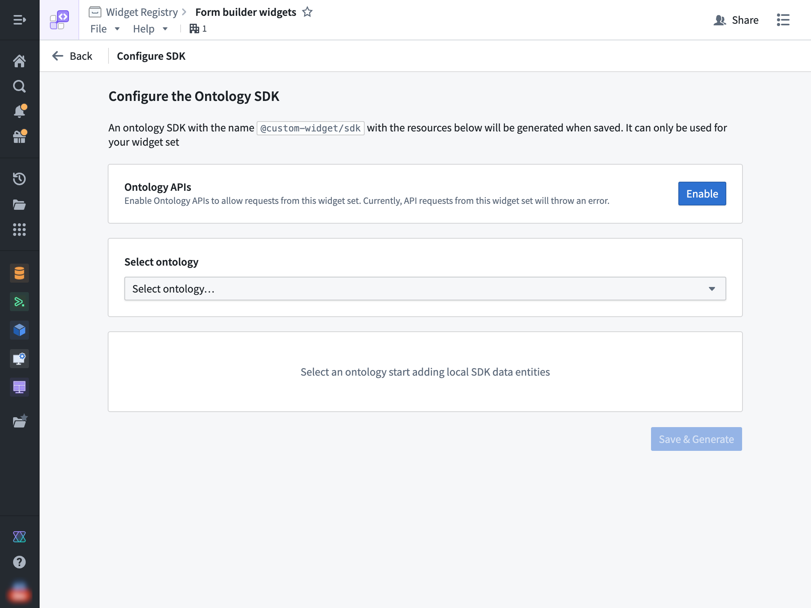
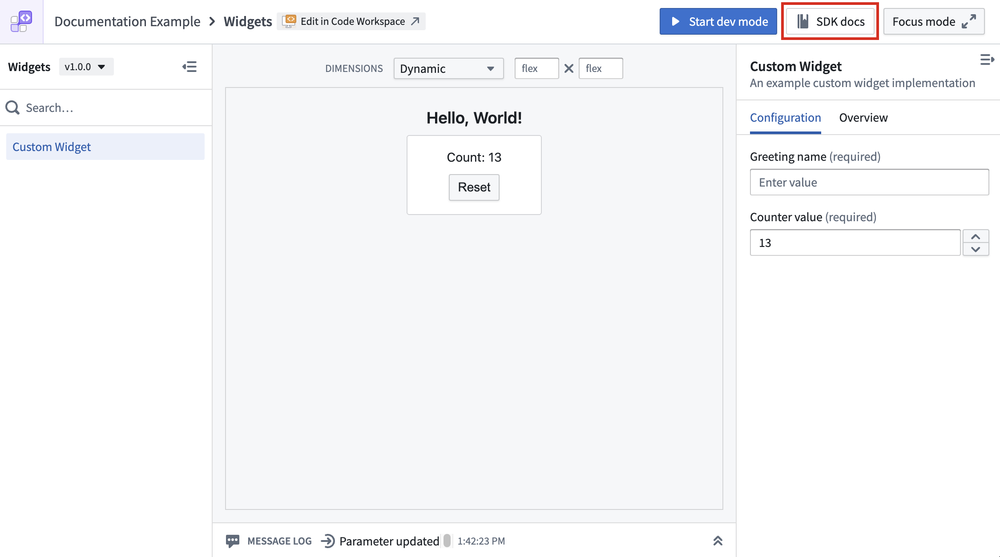

You can use OSDK in a widget set by following the steps outlined in each section below.
To configure an Ontology SDK (OSDK) for your widget set, navigate to the overview page of your widget set and then select Configure SDK in the top bar on the page.

Then, select an ontology and the specific resources that you would like to access from your widget.
You also need to enable the Ontology APIs for your widget set so that API calls made from the OSDK can succeed. This action can be performed by a user with the Information Security Officer default enrollment role. Alternatively, a user with a custom enrollment role that grants the Enable widget set unscoped API access workflow can also perform this action.
After the above steps have been completed, you can start using your OSDK in your widget set. To do so, ensure that @custom-widget/sdk is listed in your package.json and properly installed using the following JSON:
```json tab="JSON" { // ... "dependencies": { // ... "@custom-widget/sdk": "latest" } }
If you selected the **In Foundry** option during creation, then you are using a Foundry code repository. Your project `.npmrc` file should already be set up to resolve NPM dependencies including your OSDK package from Foundry and this file **should not be modified**.
If you selected the **Outside of Foundry** option and did not generate an OSDK package during creation, you must manually configure NPM to be able to resolve your OSDK package from Foundry. This can be done by setting up a `.npmrc` file in your project root with the following contents:
//
The above snippet tells NPM to resolve the `@custom-widget` scope from Foundry and auth with the `FOUNDRY_TOKEN` environment variable. You should replace the `<EXAMPLE>` and `<ri.widgetregistry..widget-set.LOCATOR>` placeholders with the specific values for your Foundry instance and widget set RID.
## Configure the OSDK in your widget
Ensure that your client is configured with the `baseUrl` set to `window.location.origin`. You can use the `createFoundryWidgetTokenProvider()` helper to provide a placeholder value for the auth token, as any access to the ontology would use the user's token and adhere to the user's permissions at runtime. Review the following code snippet:
```TypeScript tab="TypeScript"
import { createClient } from "@osdk/client";
import { $ontologyRid } from "@custom-widget/sdk";
import { createFoundryWidgetTokenProvider } from "@osdk/widget.client";
const client = createClient(
window.location.origin,
$ontologyRid,
createFoundryWidgetTokenProvider(),
);
Refer to your OSDK's documentation to learn more about usage by selecting the SDK docs option on the top bar of your widget set.

When a widget applies an Ontology action using OSDK that modifies data backing an object set parameter, the host application's data can become stale.
To address this, you can enable the refreshHostDataOnAction option, which causes the host application (such as Workshop) to automatically refresh any object set parameters passed to the widget after it applies an Ontology action. No additional configuration is required from the application builder in Workshop.
Newly-created widget sets have this option enabled at the plugin level by default. For existing widget sets, you can enable it manually as described below.
To set this as the default for all widgets in a widget set, configure the defaults option in the Vite plugin:
```TypeScript tab="vite.config.ts" import FoundryWidgetPlugin from "@osdk/widget.vite-plugin"; import { defineConfig } from "vite";
export default defineConfig({ plugins: [ FoundryWidgetPlugin({ defaults: { refreshHostDataOnAction: true, }, }), ], });
To override the plugin-level default for an individual widget, set `refreshHostDataOnAction` in the widget configuration file:
```TypeScript tab="myWidget.config.ts"
import { defineConfig } from "@osdk/widget.client";
export default defineConfig({
id: "myWidget",
name: "My Widget",
description: "An example widget",
type: "workshop",
refreshHostDataOnAction: false, // overrides the plugin-level default
parameters: {},
events: {},
});
A number of endpoints from the Admin namespace can be used within custom widgets:
When Ontology APIs are enabled, additional endpoints can also be used. This includes all endpoints from the following namespaces:
and these individual endpoints:
Currently, widgets do not support the following Foundry API features: